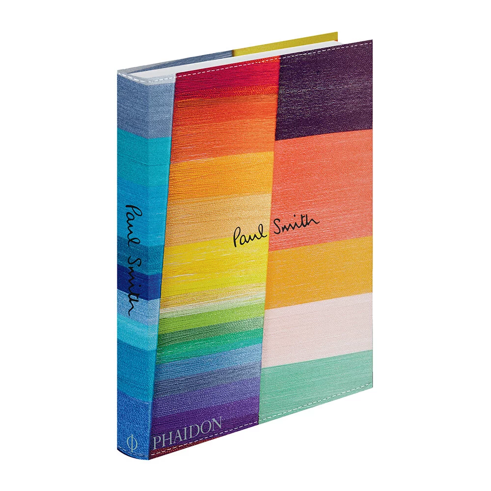
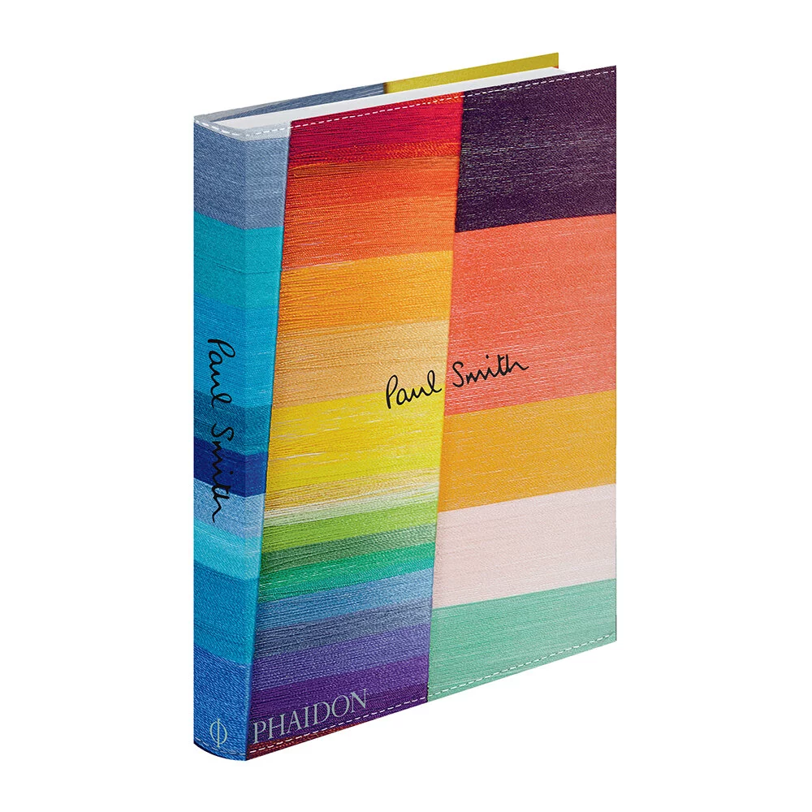

function init(){
routeForm = document.getElementById('routeFormID');
routeForm.addEventListener('submit', (e) => {
e.preventDefault();
});
routeForm.submitBtn.addEventListener('click', getRoute);
const start = [8.7665093, 50.098195]; // Waldstr 80
const end = [8.6693886, 50.1063468]; // Gutleustr. 32
mapboxgl.accessToken = 'pk.eyJ1IjoiJ9.VtVXGZ5lB83a-70qOnBk_g';
const map = new mapboxgl.Map({
container: 'map',
style: 'mapbox://styles/mapbox/navigation-night-v1',
center: [8.759833, 50.10344],
zoom: 13
});
const markerSt = new mapboxgl.Marker()
// .setLngLat([8.770833, 50.099444])
.setLngLat([start[0], start[1]])
.addTo(map);
const MarkerZiel = new mapboxgl.Marker()
.setLngLat([end[0], end[1]])
.addTo(map);
console.log('heello from init');


 
